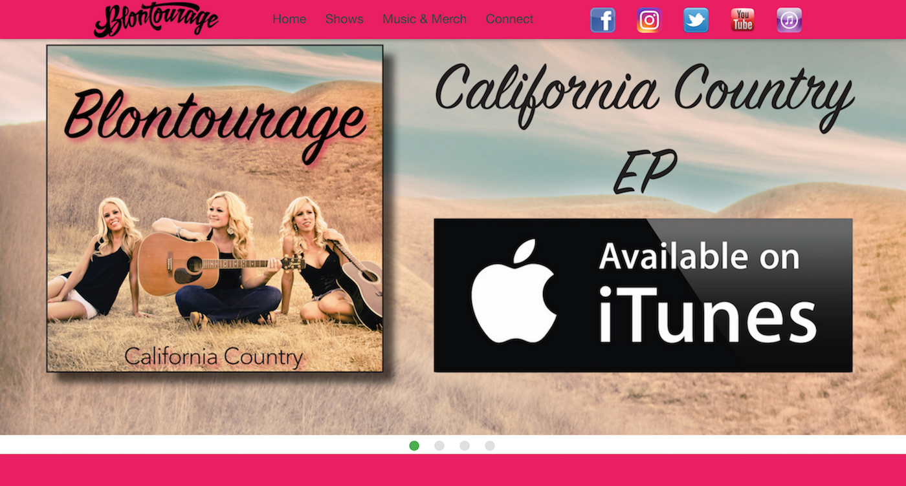
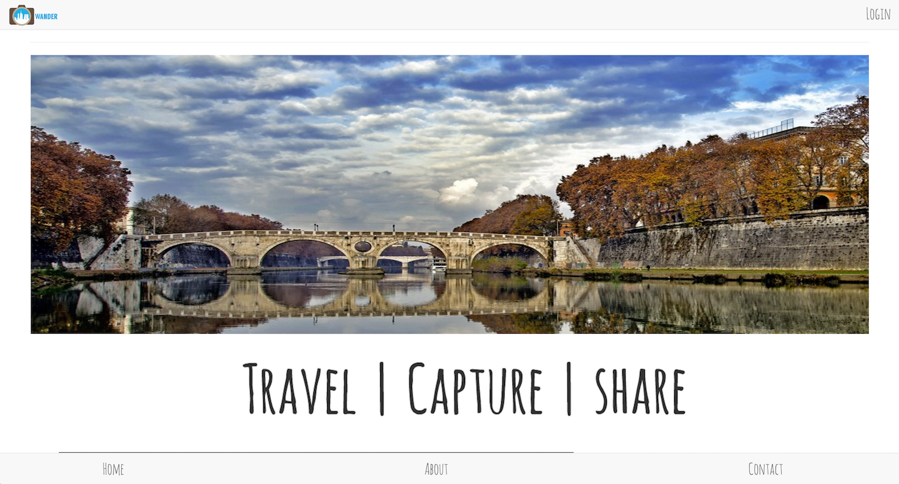
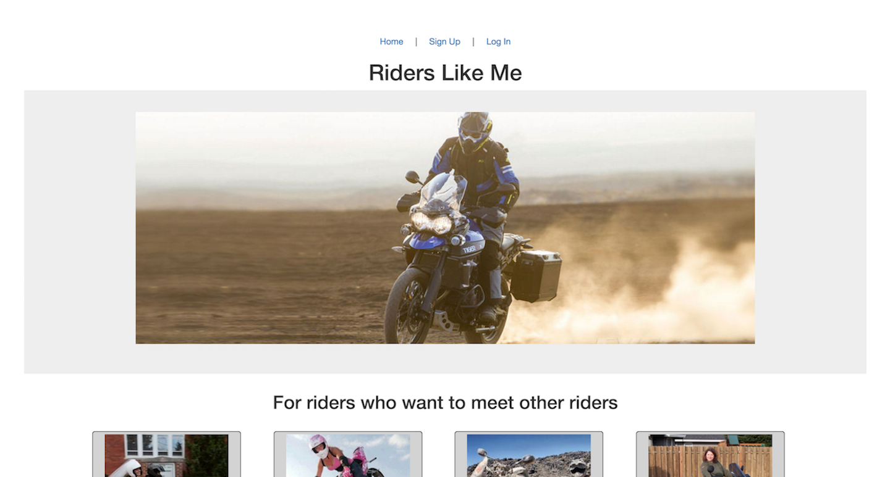
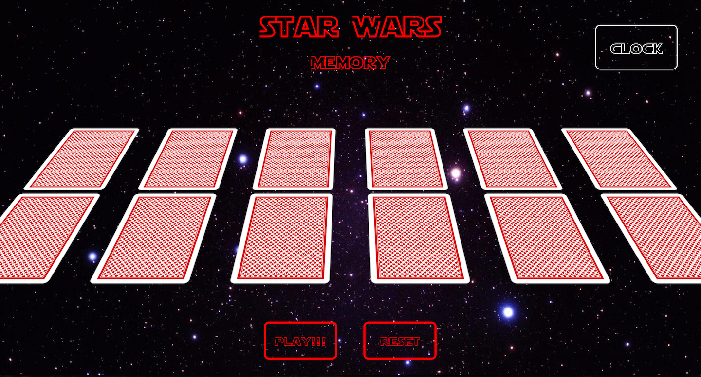

-

Built in 1 week sprint Technology used: HTML - CSS - SCSS - Bootstrap -
Materialize - JavaScript - jQuery - Express - Mongoose -MongoDB - Angular - Node - GitHub - Heroku
Blontourage is a country band that approached me to build them a new website. I sat down with the
band and went over what their hopes were for the site. I helped them develop a vision of what they
wanted and drew out wireframes and user stories for clarifying the project.
The website is a customer driven site that is meant to highlight talent and beauty.
-

Wander
Built in 1 week sprint Technology used: HTML - CSS - SCSS - Bootstrap -
JavaScript - jQuery - Express - Mongoose -MongoDB - GitHub - Heroku
Wander is a full CRUD app where you can create a profile, link to
your Flickr account through our API and download a photo album.
Wander will then contact GoogleMaps API and use the GPS markers in
your photos to overlay the route you took based on your photos.
Wander will then build a custom photo album that you can share with
all your friends.
-

Built in 1 week sprint
Technology used:
HTML - CSS - SCSS - Bootstrap - JavaScript - jQuery - Ruby - Rails - GitHub - Heroku
If you are a new motorcycle rider, or have been riding for quite some time but have moved into a
new area and don't know other riders, this app is for you.
Riders Like Me is a full CRUD app where you can create a profile to share with other riders, listing
your riding experience, interests and contact information. If you are looking for new friends, you can
look through other rider profiles and leave comments on their page or contact them directly through their
contact info.
-

Built in 1 week sprint Technology used: HTML - CSS - JavaScript - jQuery - GitHub
My design started with my common knowledge of the game memory. I started by doing several wire frames to
get an idea of what I wanted my final project to look like. I then wrote over a dozen user stories mapping
out the process I planned on using along with breaking each step into bite size pieces. Trello Link I
organized each action item into categories like HTML, CSS and JavaScript. This helped me organize each
step and also served as a reminder to push to GitHub often.